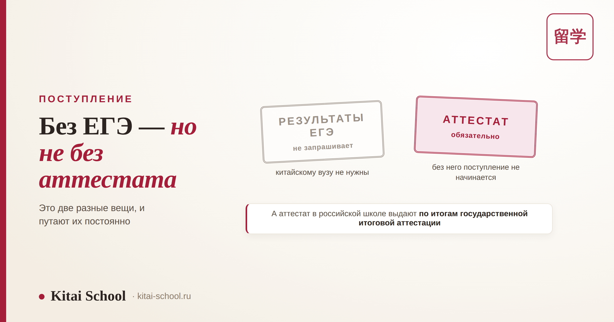
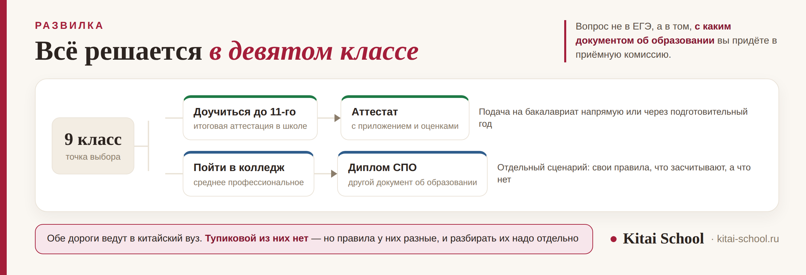

Образование в Китае
Поступление в Китай без ЕГЭ: что требует вуз вместо него и зачем нужен аттестат


Запрос «поступить в Китай без ЕГЭ» обычно означает надежду, что школу можно закончить как-нибудь и уехать. Ответ честный и в две части. Китайскому вузу результаты ЕГЭ действительно не нужны — он их не запрашивает и не считает по ним баллы. Но аттестат о среднем образовании ему нужен, а выдают аттестат в российской школе по итогам государственной итоговой аттестации. Это две разные вещи, и путают их постоянно.
Вступительных испытаний в привычном виде здесь нет: иностранные абитуриенты поступают по отдельной линии приёма, и решение принимают по документам. Гаокао сдают граждане КНР, вас он не касается. Вместо экзаменов вуз смотрит аттестат с приложением, подтверждение языка и вашу заявку, а часть вузов проводит собственное собеседование. Главная развилка не в ЕГЭ, а в том, с каким документом об образовании вы придёте: с аттестатом после 11 класса или с дипломом колледжа. И всё, что касается денег и грантов, — это отдельный разговор, который у нас уже разобран.
Короткий ответ: что нужно, а что нет
Разложим по сторонам, потому что путаница здесь стоит целого года.
| Что | Нужно ли китайскому вузу | Нужно ли вам |
|---|---|---|
| Результаты ЕГЭ | нет, не запрашивает | для российского вуза — да, для китайского — нет |
| Аттестат о среднем образовании | да, обязательно | да: без документа об образовании поступление не начинается |
| Гаокао | нет, это экзамен для граждан КНР | нет |
| Подтверждение языка | да | да, и готовить его нужно заранее |
Формулировка, которая снимает большую часть вопросов: «без ЕГЭ» значит «ЕГЭ не нужен китайской стороне», а не «школу можно не заканчивать». Форму итоговой аттестации и перечень обязательных предметов устанавливает действующий российский порядок, он меняется — и проверять его нужно на свой учебный год и в своей школе. Мы намеренно не приводим здесь конкретный перечень: он устареет быстрее, чем эта статья.
Что вуз просит вместо экзаменов
Набор небольшой и почти одинаковый от вуза к вузу. Разница — в требуемом уровне языка и в том, есть ли собственное собеседование.
| Документ | Уточнение | На что смотреть |
|---|---|---|
| Аттестат о среднем образовании | с приложением, где стоят оценки | основной документ об образовании; оценки в приложении смотрят |
| Подтверждение языка | HSK или международный экзамен по английскому | какой именно и какая ступень — зависит от программы и вуза |
| Загранпаспорт | срок действия должен покрывать учёбу | продлевать лучше заранее: это самая частая задержка |
| Медицинская справка | по форме принимающей стороны | форму и срок годности устанавливает вуз или консульство |
| Мотивационное письмо | иногда называется планом обучения | зачем вам эта программа и именно этот вуз |
| Рекомендации | от школы или преподавателей | чаще требуют на стипендиальные программы, чем на платные |
| Экзамен или собеседование вуза | есть не у всех | смотрите правила приёма конкретного вуза на текущий год |
Обратите внимание на вторую строку: подтверждение языка — единственный пункт, который нельзя собрать за месяц. Всё остальное — это документы, которые заказывают и переводят; язык же набирается временем. Поэтому его и начинают раньше всего. Какой уровень нужен конкретно вам, смотрите в правилах приёма программы; общая картина по ступеням — в разборе про бакалавриат в Китае.

Главная развилка: с каким документом вы придёте
Она важнее, чем вопрос про ЕГЭ, и решается сильно раньше — в девятом классе.
| Путь | Документ на выходе | Что дальше |
|---|---|---|
| Закончить 11 классов | аттестат о среднем образовании | подача на бакалавриат напрямую или через подготовительный год |
| После 9 класса в колледж | диплом о среднем профессиональном образовании | отдельный сценарий со своими правилами: что засчитывают, а что нет |
Второй путь — не запасной и не худший, но устроен он иначе, и разбирать его надо отдельно. Что китайский вуз видит в дипломе колледжа, какие есть варианты и где теряют год — в статье про поступление в Китай после колледжа. А что такое подготовительный год и чем он отличается от языковых курсов при вузе — в разборе бакалавриат в Китае.
Мама десятиклассницы пришла с вопросом: «дочка не хочет сдавать ЕГЭ, мы решили в Китай — можно ведь без него?» Дочка при этом уже год учила китайский и делала это всерьёз.
Разбирались двадцать минут, и выяснилось, что решение строилось на одной ошибке: ЕГЭ и аттестат считали одним и тем же. Китайскому вузу ЕГЭ действительно не нужен — а вот аттестат нужен, и школу пришлось бы закончить в любом случае.
Дальше разговор стал полезным. Оказалось, что тревога была не про экзамены, а про выбор: девочка боялась, что если сдаст ЕГЭ, то «придётся» идти в российский вуз. Сдала. Поступила в Китай. Аттестат лежит с нормальными оценками, и это ей же и помогло — приложение к аттестату смотрят.
Четыре заблуждения, которые стоят года
Все четыре мы слышим регулярно, и все четыре решаются одним разговором вовремя.
| Заблуждение | Как на самом деле |
|---|---|
| «Без ЕГЭ — значит вообще без экзаменов» | Язык подтверждать придётся, а у части вузов есть собственный экзамен или собеседование |
| «Раз ЕГЭ не нужен, школу можно не заканчивать» | Нужен документ об образовании. Без него разговор с приёмной комиссией не начинается |
| «ЕГЭ по китайскому засчитают в китайском вузе» | Нет. Это российский экзамен для поступления в российский вуз, и построен он на школьной программе |
| «Оценки не важны, раз нет вступительных» | Приложение к аттестату смотрят, и на конкурсных программах оно работает как ваш средний балл |
Про третью строку отдельно: ЕГЭ по китайскому языку — хороший экзамен, но он про другое. Чем он отличается от HSK и почему одной подготовкой их не закрыть, разобрано в статье про китайский язык для детей.
Чего в этой статье нет: карта по деньгам и заявке
Всё, что касается финансирования и подачи, у нас уже разобрано подробно, и пересказывать это здесь было бы только хуже. Вот куда идти.
| Ваш вопрос | Где ответ |
|---|---|
| Какие вообще есть пути к оплаченному месту | как поступить в Китай на бюджет |
| Как устроены гранты и что подавать | гранты на обучение в Китае |
| Сколько своих денег всё равно понадобится | бесплатное образование в Китае |
| Как подаются на CSC и что говорить на интервью | стипендия CSC |
| Какие бывают стипендии и что они покрывают | стипендии в Китае |
| Как устроена ступень бакалавриата | бакалавриат в Китае |
И честная оговорка про обещания. Гарантированного поступления не бывает — ни с ЕГЭ, ни без него: программы конкурсные, а бесплатное место тем более. Что реально влияет на решение комиссии и как выглядит план на случай отказа — в разборе как поступить в Китай на бюджет.
Что делать прямо сейчас, если решение принято
Два дела, и они идут параллельно, а не по очереди.
| Что сделать | Почему именно это |
|---|---|
| Выписать требования конкретной программы | язык, документы, сроки подачи — всё это указано в правилах приёма и различается от вуза к вузу |
| Начать язык | это единственный пункт, который нельзя ускорить в последний момент |
| Проверить свой год по аттестату | форма итоговой аттестации устанавливается на учебный год; уточняйте в школе |
| Заказать долгие документы | загранпаспорт и справки делаются дольше, чем кажется |
Про язык по срокам: для программ на китайском обычно нужен подтверждённый уровень, и до него идут не месяцы, а годы, если начинать с нуля. Что проверяет HSK 4 и как устроена устная часть HSKK — в отдельных разборах.
Частые вопросы (FAQ)
Правда ли, что для поступления в Китай ЕГЭ не нужен?
Правда в той части, которая касается китайского вуза: результаты ЕГЭ он не использует как вступительное испытание и в комплекте документов их не запрашивает. Но вуз просит аттестат о среднем образовании, а его в российской школе выдают по итогам государственной итоговой аттестации. Так что «без ЕГЭ» означает «ЕГЭ не нужен китайской стороне», а не «школу можно не заканчивать».
Значит, можно совсем не сдавать ЕГЭ?
Это решается не китайской стороной, а российским порядком получения аттестата: форму итоговой аттестации и перечень обязательных предметов устанавливает действующий порядок, и он меняется. Проверять нужно на свой учебный год и в своей школе. Если аттестата за 11 класс не будет, остаётся другой путь — после 9 класса пойти в колледж и поступать уже с дипломом; про него у нас есть отдельный разбор.
Засчитают ли ЕГЭ по китайскому языку?
В китайском вузе — нет. ЕГЭ по китайскому нужен для поступления в российский вуз и опирается на школьную программу и свой формат заданий. Китайскому вузу нужен другой документ — подтверждение уровня языка, обычно HSK для программ на китайском или международный экзамен по английскому для англоязычных программ. Разницу между HSK и ЕГЭ мы подробно разбирали в статье про китайский для детей.
Нужно ли сдавать гаокао?
Нет. Гаокао — государственный экзамен для граждан КНР, и иностранные абитуриенты поступают по отдельной линии приёма, со своим набором документов и требований. Именно поэтому вступительных испытаний в привычном школьнику виде здесь чаще всего и нет: решение принимают по документам, а не по баллам единого экзамена.
Какой уровень HSK нужен?
Единой цифры нет: требование устанавливает конкретный вуз и конкретная программа, и различаются они заметно. Смотреть нужно правила приёма выбранной программы на текущий год — там уровень назван прямо. Общая картина по ступеням и по тому, чем отличаются программы на китайском и на английском, разобрана в статье про бакалавриат в Китае.
С чего начать, если решение принято?
С двух вещей одновременно. Первая — выбрать программу и выписать её требования: язык, документы, сроки подачи. Вторая — начать язык, потому что подтверждение уровня занимает больше всего времени и его нельзя ускорить в последний момент. Вопросы денег, грантов и собеседования у нас разобраны отдельными статьями, и по ним есть карта в конце этой.
Мы готовим к поступлению с языковой стороны: подтягиваем уровень под требования выбранной программы и отдельно готовим к собеседованию на китайском. Приходите на бесплатное пробное занятие — посмотрим ваш уровень и посчитаем, что успеваем к подаче.
Или напишите слово ПОСТУПЛЕНИЕ нашему менеджеру в Telegram — подберём формат под ваши сроки.
Дальше по теме: пути к оплаченному месту — как поступить в Китай на бюджет; как устроены гранты — гранты на обучение в Китае; сколько нужно своих денег — бесплатное образование в Китае; подача на CSC и интервью — стипендия CSC; какие бывают стипендии — стипендии в Китае; устройство бакалавриата — бакалавриат в Китае; путь через колледж — поступление в Китай после колледжа; ЕГЭ по китайскому и олимпиады — китайский язык для детей; уровни языка — HSK 4 и HSKK; занятия — индивидуальные уроки.
Источники
- Практика Kitai School — сопровождение школьников и их семей на этапе выбора программы и подготовки языка.
- Правила приёма конкретных китайских вузов для иностранных абитуриентов — требования и перечень документов публикуются на каждый год приёма.
- Действующий порядок государственной итоговой аттестации в России — форма и перечень обязательных предметов устанавливаются на учебный год, уточняются в школе.
Пусть решение будет осознанным! 金榜题名！